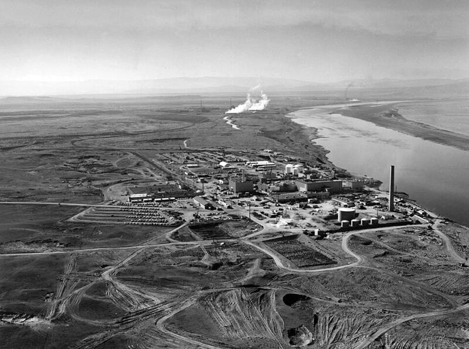

Hanford Site
Manhattan Project, Washington

Produced the plutonium for the Trinity test and the Nagasaki bomb. Confirmed program. 1
Open in the interactive Watcher
Sources
- Hanford Site Wikipedia
Manhattan Project, Washington

Produced the plutonium for the Trinity test and the Nagasaki bomb. Confirmed program. 1
Open in the interactive Watcher